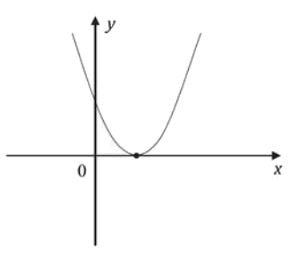
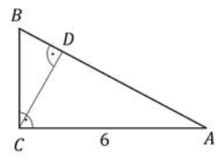
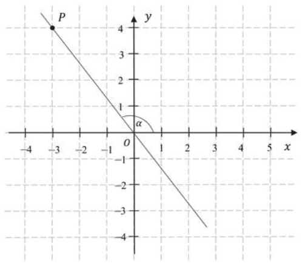
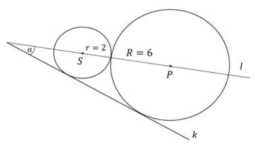
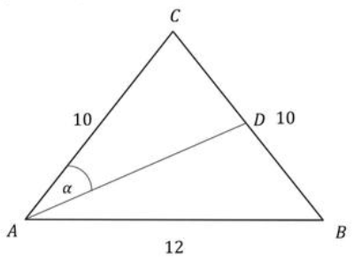

Matura 2020 sierpień
Na tej stronie umieściłem rozwiązania zadań z matury
poprawkowej z 8 września 2020.
Liczba \((\sqrt{5}+2\sqrt{3})^2\) jest równa
A.\( 11 \)
B.\( 17 \)
C.\( 17+4\sqrt{15} \)
D.\( 15+2\sqrt{15} \)
C
Liczba \(\sqrt[4]{9\cdot \sqrt{3}}\) można zapisać w postaci
A.\( 3^{\frac{5}{8}} \)
B.\( 3^{\frac{11}{4}} \)
C.\( 3^{\frac{1}{4}} \)
D.\( 3^{\frac{9}{8}} \)
A
Liczba \(2\log 5+3\log 2\) jest równa
A.\( \log(2\cdot 5)+\log(3\cdot 2) \)
B.\( \log 2^5 +\log 3^2 \)
C.\( 2\cdot 3\log(5\cdot 2) \)
D.\( \log(5^2\cdot 2^3) \)
Najmniejszą liczbą całkowitą spełniającą nierówność \(\frac{5(4-x)}{2}\lt x\) jest
liczba
A.\( 1 \)
B.\( 2 \)
C.\( 3 \)
D.\( 4 \)
C
W zestawie \(250\) liczb występują jedynie liczby \(4\) i \(2\). Liczba \(4\)
występuje \(128\) razy, a liczba \(2\) występuje \(122\) razy. Przyjęto przybliżenie średniej
arytmetycznej zestawu tych wszystkich liczb do liczby \(3\). Błąd bezwzględny tego przybliżenia jest
równy
A.\( 0{,}024 \)
B.\( 0{,}24 \)
C.\( 0{,}0024 \)
D.\( 0{,}00024 \)
A
Na początku miesiąca komputer kosztował \(3\ 500\) zł. W drugiej dekadzie tego
miesiąca cenę komputera obniżono o \(10\%\), a w trzeciej dekadzie cena tego komputera została
jeszcze raz obniżona, tym razem o \(15\%\). Innych zmian ceny lego komputera w tym miesiącu już nie
było. Cena komputera na koniec miesiąca była równa
A.\( 3\ 272{,}50 \) zł
B.\( 2\ 625 \) zł
C.\( 2\ 677{,}50 \) zł
D.\( 2\ 800 \) zł
C
Funkcje liniowe \(f\) i \(g\) określone wzorami \(f(x) =-4x + 12\) i \(g(x) =-2x +
k + 3\) mają wspólne miejsce zerowe. Stąd wynika, że
A.\( k=-6 \)
B.\( k=-3 \)
C.\( k=3 \)
D.\( k=6 \)
C
Zbiorem wartości funkcji kwadratowej \(f\) określonej wzorem \(f(x) = -(x + 9)^2 +
m\) jest przedział \((-\infty , -5)\). Wtedy
A.\( m=5 \)
B.\( m=-5 \)
C.\( m=-9 \)
D.\( m=9 \)
B
Osią symetrii wykresu funkcji kwadratowej \(f\) określonej wzorem \(f(x)=
\frac{1}{3}x^2 + 4x + 7\) jest prosta o równaniu
A.\( x=-6 \)
B.\( y=-6 \)
C.\( x=-2 \)
D.\( y=-2 \)
A
Na rysunku poniżej przedstawiono fragment wykresu funkcji kwadratowej \(f\)
określonej wzorem \(f(x)=ax^2+bx+c\).  Stąd wynika, że
A.\( \begin{cases} a \lt 0 \\ c \lt 0 \end{cases} \)
B.\( \begin{cases} a \lt 0 \\ c \gt 0 \end{cases} \)
C.\( \begin{cases} a \gt 0 \\ c \lt 0 \end{cases} \)
D.\( \begin{cases} a \gt 0 \\ c \gt 0 \end{cases} \)
D
Rozwiązaniem równania \(\frac{x^2-3x}{x^2+x}=0\) jest liczba
A.\( -3 \)
B.\( 0 \)
C.\( 3 \)
D.\( 9 \)
C
Do okręgu o środku w punkcie \(S = (2, 4)\) należy punkt \(P = (1, 3)\). Długość
tego okręgu jest równa
A.\( 4\pi\sqrt{2} \)
B.\( 3\pi\sqrt{2} \)
C.\( 2\pi\sqrt{2} \)
D.\( \pi\sqrt{2} \)
C
Prosta \(l\) jest równoległa do prostej \(y=-\frac{1}{2}x+2\). Na prostej \(l\)
leży punkt \(P=(0,7)\). Zatem równanie prostej \(l\) ma postać
A.\( y=2x \)
B.\( y=2x+7 \)
C.\( y=-\frac{1}{2}x \)
D.\( y=-\frac{1}{2}x+7 \)
D
Punkt \(S=(4, 8)\) jest środkiem odcinka \(PQ\), którego koniec \(P\) leży na osi
\(0y\), a koniec \(Q\) - na osi \(Ox\). Wynika stąd, że
A.\( P=(0,16)\ \) i \(\ Q=(8,0)\)
B.\( P=(0,8)\ \) i \(\ Q=(16,0)\)
C.\( P=(0,4)\ \) i \(\ Q=(4,0)\)
D.\( P=(0,8)\ \) i \(\ Q=(8,0)\)
A
Przyprostokątna \(AC\) trójkąta prostokątnego \(ABC\) ma długość \(6\), a wysokość
\(CD\) dzieli go na dwa takie trójkąty \(ADC\) i \(CDB\), że pole trójkąta \(ADC\) jest \(4\) razy
większe od pola trójkąta \(CDB\) (zobacz rysunek).  Przyprostokątna \(BC\) trójkąta prostokątnego \(ABC\) jest
równa
A.\( 1{,}5 \)
B.\( 2 \)
C.\( 2{,}5 \)
D.\( 3 \)
D
Punkty \(P = (-3, 4)\) i \(O = (0, 0)\) leżą na jednej prostej. Kąt \(\alpha \)
jest kątem nachylenia tej prostej do osi \(Ox\) (zobacz rysunek).  Wtedy tangens \(\alpha \) jest równy
A.\( -\frac{3}{4} \)
B.\( -\frac{4}{3} \)
C.\( \frac{4}{3} \)
D.\( \frac{3}{4} \)
B
Kąt \(\alpha \) jest ostry oraz \(\sin \alpha =\frac{2\sqrt{5}}{5}\). Wtedy
A.\( \cos \alpha =\frac{5}{2\sqrt{5}} \)
B.\( \cos \alpha =\frac{\sqrt{5}}{5} \)
C.\( \cos \alpha =\frac{1}{5} \)
D.\( \cos \alpha =\frac{4}{5} \)
B
W ciągu arytmetycznym \((a_n)\), określonym dla każdej liczby naturalnej \(n\gt
1\), są dane dwa wyrazy: \(a_1=2\) i \(a_2=5\). Stąd wynika, że \(n\)-ty wyraz tego ciągu jest
określony wzorem
A.\( a_n=3n-1 \)
B.\( a_n=3n+2 \)
C.\( a_n=2n+2 \)
D.\( a_n=2n-1 \)
A
Funkcja \(f\) jest określona wzorem \(f(x) =\left(\frac{1}{2}\right)^x\) dla
wszystkich liczb rzeczywistych \(x\). Funkcja \(f\) dla argumentu \(x =-3\) przyjmuje wartość
A.\( \frac{1}{6} \)
B.\( \frac{1}{8} \)
C.\( 6 \)
D.\( 8 \)
D
Wielkości \(x\) i \(y\) są odwrotnie proporcjonalne (tabela poniżej).
| \(x\) |
\(a\) |
\(3\) |
\(8\) |
| \(y\) |
\(36\) |
\(24\) |
\(b\) |
Stąd wynika, że
A.\( a=6,\ b=22{,}5 \)
B.\( a=\frac{4}{3},\ b=6 \)
C.\( a=3,\ b=96 \)
D.\( a=2,\ b=9 \)
D
W prostokątnym układzie współrzędnych na płaszczyźnie parę prostych prostopadłych
opisują równania
A.\( y=2x \) i \(y=-\frac{1}{2}\)
B.\( y=-2x \) i \(y=\frac{1}{2}x \)
C.\( y=2x \) i \(y=\frac{1}{2}x \)
D.\( y=2 \) i \(y=-2x \)
B
Dane są punkty \(A = (4,1)\), \(B = (1,3)\), \(C = (4,-1)\). Pole trójkąta \(ABC\)
jest równe
A.\( 3 \)
B.\( 6 \)
C.\( 8 \)
D.\( 16 \)
A
Ile jest wszystkich liczb naturalnych czterocyfrowych mniejszych od \(2020\) i
podzielnych przez \(4\)?
A.\( 506 \)
B.\( 505 \)
C.\( 256 \)
D.\( 255 \)
D
Dane są graniastosłup i ostrosłup o takich samych podstawach. Liczba wszystkich
wierzchołków tego graniastosłupa jest o \(9\) większa od liczby wszystkich wierzchołków tego
ostrosłupa. Podstawą każdej z tych brył jest
A.dziewięciokąt.
B.ośmiokąt.
C.osiemnastokąt.
D.dzicsięciokąt.
D
Pole powierzchni całkowitej sześcianu jest równe \(12\). Suma długości wszystkich
krawędzi tego sześcianu jest równa
A.\( 6\sqrt{2} \)
B.\( 3\sqrt{2} \)
C.\( 12\sqrt{2} \)
D.\( 8\sqrt{2} \)
C
Rozwiąż nierówność: \(-2x^2+5x+3 \le0\).
\(x\in \left(-\infty ,-\frac{1}{2}\right\rangle \cup \langle 3,+\infty
)\)
Dany jest trzywyrazowy ciąg \((x + 2,\ 4x + 2,\ x + 11)\). Oblicz wszystkie
wartości \(x\), dla których ten ciąg jest geometryczny.
\(-\frac{6}{5},\ 1\)
Wykaż, że dla dowolnych różnych liczb rzeczywistych \(a\) i \(b\) prawdziwa jest
nierówność \[a(a + b) + b^2 \gt 3ab\]
Dwa okręgi o promieniach \(r = 2\) i \(R = 6\) są styczne zewnętrznie i są styczne
do wspólnej prostej \(k\). Wykaż, że prosta \(l\) przechodząca przez środki \(S\) i \(P\) tych
okręgów przecina prostą \(k\) pod kątem \(\alpha = 30^\circ \) (zobacz rysunek). 
Rozwiąż równanie \((x^3+8)(x^2-9)=0\)
\(x=-2\) oraz \(x=-3\) oraz \(x=3\)
W pudełku jest \(8\) kul, z czego \(5\) białych i \(3\) czarne. Do tego pudełka
dołożono \(n\) kul białych. Doświadczenie polega na losowaniu jednej kuli z tego pudełka.
Prawdopodobieństwo, że będzie to kula biała, jest równe \(\frac{11}{12}\). Oblicz \(n\)?
\(n=28\)
Dany jest trójkąt równoramienny \(ABC\), w którym podstawa \(AB\) ma długość
\(12\), a każde z ramion \(AC\) i \(BC\) ma długość równą \(10\). Punkt \(D\) jest środkiem ramienia
\(BC\) (zobacz rysunek).  Oblicz
sinus kąta \(\alpha \), jaki środkowa \(AD\) tworzy z ramieniem \(AC\) trójkąta \(ABC\).
\(\frac{24\sqrt{97}}{485}\)
Pole powierzchni bocznej stożka jest trzy razy większe od pola jego podstawy.
Wysokość tego stożka jest równa \(12\). Oblicz objętość tego stożka.
\(V=72\pi\)
Prosta o równaniu \(y = -2x + 7\) jest symetralną odcinka \(PQ\), gdzie \(P =
(4,5)\). Oblicz współrzędne punktu \(Q\).
\(Q=\left(-\frac{4}{5}, \frac{13}{5}\right)\)